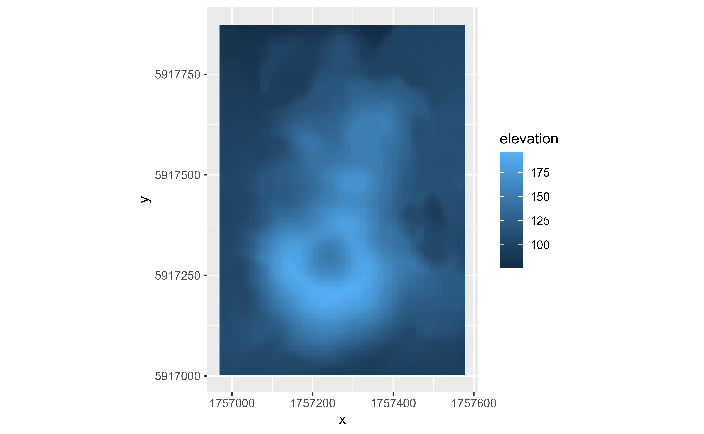
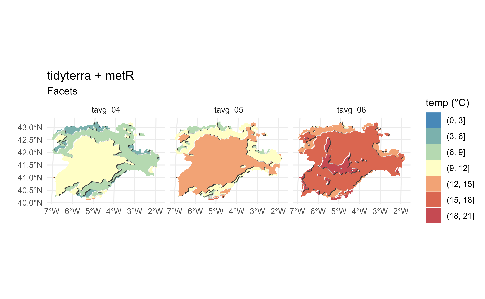

Fortify SpatRaster and SpatVector objects to data frames. This provide
native compatibility with ggplot2::ggplot().
Arguments
- model
A
SpatRastercreated withterra::rast()or aSpatVectorcreated withterra::vect().- data
Not used by this method.
- ...
Other arguments passed on to
layer()'sparamsargument. These arguments broadly fall into one of 4 categories below. Notably, further arguments to thepositionargument, or aesthetics that are required can not be passed through.... Unknown arguments that are not part of the 4 categories below are ignored.Static aesthetics that are not mapped to a scale, but are at a fixed value and apply to the layer as a whole. For example,
colour = "red"orlinewidth = 3. The geom's documentation has an Aesthetics section that lists the available options. The 'required' aesthetics cannot be passed on to theparams. Please note that while passing unmapped aesthetics as vectors is technically possible, the order and required length is not guaranteed to be parallel to the input data.When constructing a layer using a
stat_*()function, the...argument can be used to pass on parameters to thegeompart of the layer. An example of this isstat_density(geom = "area", outline.type = "both"). The geom's documentation lists which parameters it can accept.Inversely, when constructing a layer using a
geom_*()function, the...argument can be used to pass on parameters to thestatpart of the layer. An example of this isgeom_area(stat = "density", adjust = 0.5). The stat's documentation lists which parameters it can accept.The
key_glyphargument oflayer()may also be passed on through.... This can be one of the functions described as key glyphs, to change the display of the layer in the legend.
- .name_repair
Treatment of problematic column names:
"minimal": No name repair or checks, beyond basic existence."unique": Make sure names are unique and not empty."check_unique": (default value), no name repair, but check they areunique."universal": Make the namesuniqueand syntactic.a function: apply custom name repair (e.g.,
.name_repair = make.namesfor names in the style of base R).A purrr-style anonymous function, see
rlang::as_function().
- maxcell
positive integer. Maximum number of cells to use for the plot.
- pivot
Logical. When
TRUEtheSpatRasterwould be fortified on long format. WhenFALSE(the default) it would be fortified as a data frame with a column for each layer. See Details.
Value
fortify.SpatVector() returns a sf object and
fortify.SpatRaster() returns a tibble. See Methods.
Methods
Implementation of the generic ggplot2::fortify() method.
SpatRaster
Return a tibble than can be used with ggplot2::geom_* like
ggplot2::geom_point(), ggplot2::geom_raster(), etc.
The resulting tibble includes the coordinates on the columns x, y. The
values of each layer are included as additional columns named as per the
name of the layer on the SpatRaster.
The CRS of the SpatRaster can be retrieved with
attr(fortifiedSpatRaster, "crs").
It is possible to convert the fortified object onto a SpatRaster again with
as_spatraster().
When pivot = TRUE the SpatRaster is fortified in a "long" format (see
tidyr::pivot_longer()). The fortified object would have the following
columns:
x,y: Coordinates (center) of the cell on the corresponding CRS.lyr: Indicating the name of theSpatRasterlayer ofvalue.value: The value of theSpatRasterin the correspondinglyr.
This option may be useful when using several geom_* and for faceting, see
Examples.
SpatVector and SpatGraticule
Return a sf object than can be used with ggplot2::geom_sf().
See also
sf::st_as_sf(), as_tibble.Spat, as_spatraster(),
ggplot2::fortify().
Other ggplot2 utils:
autoplot.Spat,
geom_spat_contour,
geom_spatraster(),
geom_spatraster_rgb(),
ggspatvector,
stat_spat_coordinates()
Other ggplot2 methods:
autoplot.Spat
Coercing objects:
as_coordinates(),
as_sf(),
as_spatraster(),
as_spatvector(),
as_tibble.Spat
Examples
# \donttest{
# Get a SpatRaster
r <- system.file("extdata/volcano2.tif", package = "tidyterra") %>%
terra::rast() %>%
terra::project("EPSG:4326")
fortified <- ggplot2::fortify(r)
fortified
#> # A tibble: 23,166 × 3
#> x y elevation
#> <dbl> <dbl> <dbl>
#> 1 175. -36.9 NA
#> 2 175. -36.9 NA
#> 3 175. -36.9 NA
#> 4 175. -36.9 NA
#> 5 175. -36.9 NA
#> 6 175. -36.9 NA
#> 7 175. -36.9 NA
#> 8 175. -36.9 NA
#> 9 175. -36.9 NA
#> 10 175. -36.9 NA
#> # ℹ 23,156 more rows
# The crs is an attribute of the fortified SpatRaster
attr(fortified, "crs")
#> [1] "GEOGCRS[\"WGS 84\",\n ENSEMBLE[\"World Geodetic System 1984 ensemble\",\n MEMBER[\"World Geodetic System 1984 (Transit)\"],\n MEMBER[\"World Geodetic System 1984 (G730)\"],\n MEMBER[\"World Geodetic System 1984 (G873)\"],\n MEMBER[\"World Geodetic System 1984 (G1150)\"],\n MEMBER[\"World Geodetic System 1984 (G1674)\"],\n MEMBER[\"World Geodetic System 1984 (G1762)\"],\n MEMBER[\"World Geodetic System 1984 (G2139)\"],\n MEMBER[\"World Geodetic System 1984 (G2296)\"],\n ELLIPSOID[\"WGS 84\",6378137,298.257223563,\n LENGTHUNIT[\"metre\",1]],\n ENSEMBLEACCURACY[2.0]],\n PRIMEM[\"Greenwich\",0,\n ANGLEUNIT[\"degree\",0.0174532925199433]],\n CS[ellipsoidal,2],\n AXIS[\"geodetic latitude (Lat)\",north,\n ORDER[1],\n ANGLEUNIT[\"degree\",0.0174532925199433]],\n AXIS[\"geodetic longitude (Lon)\",east,\n ORDER[2],\n ANGLEUNIT[\"degree\",0.0174532925199433]],\n USAGE[\n SCOPE[\"Horizontal component of 3D system.\"],\n AREA[\"World.\"],\n BBOX[-90,-180,90,180]],\n ID[\"EPSG\",4326]]"
# Back to a SpatRaster with
as_spatraster(fortified)
#> class : SpatRaster
#> dimensions : 162, 143, 1 (nrow, ncol, nlyr)
#> resolution : 4.916776e-05, 4.916772e-05 (x, y)
#> extent : 174.7611, 174.7682, -36.87992, -36.87195 (xmin, xmax, ymin, ymax)
#> coord. ref. : lon/lat WGS 84 (EPSG:4326)
#> source(s) : memory
#> name : elevation
#> min value : 76.56599
#> max value : 195.50436
# You can now use a SpatRaster with any geom
library(ggplot2)
ggplot(r) +
geom_histogram(aes(x = elevation),
bins = 20, fill = "lightblue",
color = "black"
)
#> Warning: Removed 975 rows containing non-finite outside the scale range (`stat_bin()`).

# Create a SpatVector
extfile <- system.file("extdata/cyl.gpkg", package = "tidyterra")
cyl <- terra::vect(extfile)
cyl
#> class : SpatVector
#> geometry : polygons
#> dimensions : 9, 3 (geometries, attributes)
#> extent : 2892687, 3341372, 2017622, 2361600 (xmin, xmax, ymin, ymax)
#> source : cyl.gpkg
#> coord. ref. : ETRS89-extended / LAEA Europe (EPSG:3035)
#> names : iso2 cpro name
#> type : <chr> <chr> <chr>
#> values : ES-AV 05 Avila
#> ES-BU 09 Burgos
#> ES-LE 24 Leon
# To sf
ggplot2::fortify(cyl)
#> Simple feature collection with 9 features and 3 fields
#> Geometry type: GEOMETRY
#> Dimension: XY
#> Bounding box: xmin: 2892687 ymin: 2017622 xmax: 3341372 ymax: 2361600
#> Projected CRS: ETRS89-extended / LAEA Europe
#> # A tibble: 9 × 4
#> iso2 cpro name geometry
#> * <chr> <chr> <chr> <GEOMETRY [m]>
#> 1 ES-AV 05 Avila POLYGON ((3126360 2066778, 3125074 2065007, 3124303 20…
#> 2 ES-BU 09 Burgos MULTIPOLYGON (((3276731 2262326, 3275910 2265723, 3270…
#> 3 ES-LE 24 Leon POLYGON ((3049427 2233673, 3049069 2234201, 3047819 22…
#> 4 ES-P 34 Palencia MULTIPOLYGON (((3175411 2291868, 3175606 2293658, 3177…
#> 5 ES-SA 37 Salamanca POLYGON ((3042661 2138939, 3043434 2140279, 3046345 21…
#> 6 ES-SG 40 Segovia POLYGON ((3126360 2066778, 3124037 2067928, 3118421 20…
#> 7 ES-SO 42 Soria POLYGON ((3194084 2154251, 3194362 2156613, 3195482 21…
#> 8 ES-VA 47 Valladolid MULTIPOLYGON (((3158120 2161552, 3155455 2155198, 3149…
#> 9 ES-ZA 49 Zamora POLYGON ((3042661 2138939, 3040851 2133391, 3038188 21…
# Now you can use geom_sf() straight away thanks to fortify::SpatVector()
library(ggplot2)
ggplot(cyl) +
geom_sf()

# }